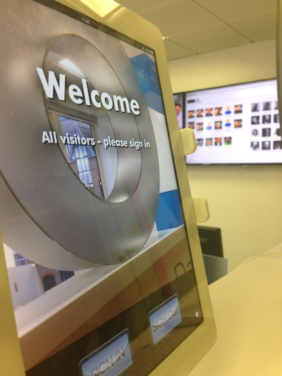
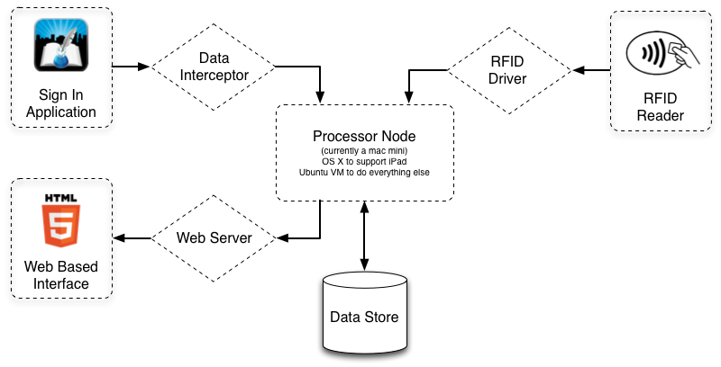

The ODI Experience: Data from the moment you walk in
Since the opening night on the 4th December 2012, the ODI has been using an electronic sign-in system to capture data about thosewho visitthe office. This helps us measure how well we're doing against our metrics, and ensures we have a list of people in the office in case of a fire. Using open technologies and standards has enabled us to expand this system to meet the needs of the space and the people working within.
If you have visited the ODI then you will have inevitably come across our electronic sign-in that greets you as soon as youexit the lift. This system has proved very effective and allows us to assess our impact both on a local and global scale.
The main physical presence comes in the form of an iPad loaded with the ready-made Sign In application. While not an open source application, at the time this was the only suitable application, in any mobile store, able to be quickly customised and allow extraction of the data.
The sign in system with current visitors displayed on the screens in the backgroundThe Sign In application is able to be run on multiple iPads, each located at different entrances and exists on your building. So that a visitor can enter via one entrance and exit via another, the application synchronises its data using a series of XML files passed between each device. Thus in order to extract the data in real time (rather than receive a summary email once a day), we built a program to emulate an iPad and which simply receives the data like it is just another device. One script later and we have piped all the data into the visitor system database ready to used by other parts of the system.
As we move forward, it is intended that this proprietary part of the system be replaced with an open source solution built on top of the platform that has evolved in the last six months. However in the time allowed, we are very appreciative for the pre-built application and are happy to share our experiences of extracting your data from the application's closed wall architecture.
It soon became clear that entering details on a touch screen each time you visit does not create the best experience, especially for staff that are in the office on a daily basis.
The initial solution to this problem involved complementing the sign-in system with a web interface when people can simply click their picture to sign in and out of the office each day. While this worked for some time, during one of our 20% weeks, I decided to investigate the potential of using an RFID card reader to allow people to simply touch in and out of the office using one of the many cards we carry in our wallets.
In order to both save the environment and space in peoples wallets we don’t issue an RFID card. Using an off-the-shelf MiFare 1K card reader allows people to associate many different cards to their profile including Oyster, ITSO and contactless payment cards.1
Using a contactless card read has dramatically reduced the effort required to sign in and out and also improved the quality of the data. Making the process so simple has encouraged people to touch in and out at lunchtime in addition to either end of the day. Although it is still unconfirmed if the increase in data is somehow linked to the Star Trek computer sounds that play when you touch in and out.

System architecture of the ODI sign in system The diagram above shows the architecture of the system. As should be evident, the system is very modular and all the different partscommunicate with the processor node using an Application Programming Interface (API) based upon the HyperText Transfer Protocol (HTTP) as intended by our illustrious director. The Star Trek computer sounds are directly mapped to the HTTP status codes that best represent each one2.
By building a modular system that re-uses a lot of existing technology, including the RFID card we all carry, introduces a huge cost saving of purchasing a complex electronic visitor system. Our aim in the near future is to replace the dependency on the closed source iPad application. This way the whole system can be run using a Raspberry Pi, cheaper tablet and an RFID card reader. This brings the cost of the entire system into the sub £400 bracket3. This will also mean that we can continue to expand the system to allow assignment of desk space and allow all visitors to associate RFID cards.
If you want to deploy your own system then all the code modules are available onGitHub. For more information you can contact the ODI tech team on [email protected] or join our IRC channel (#theodi on irc.freenode.net)
<sup>1</sup> Before people start worrying that we can make charges to your Oyster and Bank cards, this is not possible. Contactless cards all contain a generic serial number put on by the manufacturer and this number is not associated with the use of the card, so although we collect this number so you can sign in and out of the ODI quickly, it is not possible for us to tell what type of card you used, only that you have one.
<sup>2</sup> Finding codes for some sounds proved a real challenge, e.g. 418
<sup>3</sup> Based upon the tablet being a Nexus 10 or iPad 2.